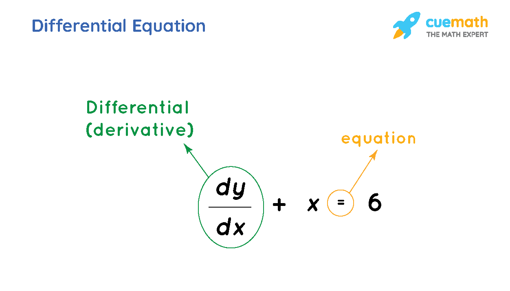

Differential Equations
An equation that contains the derivative of an unknown function is called a differential equation. The rate of change of a function at a point is defined by the derivatives of the function. A differential equation relates these derivatives with the other functions. Differential equations are mainly used in the fields of biology, physics, engineering, and many. The main purpose of the differential equation is for studying the solutions that satisfy the equations and the properties of the solutions. Let us discuss the definition, types, methods to solve the differential equation, order, and degree of the differential equation, types of differential equations, with real-world examples, and practice problems.
What are Differential Equations?
A differential equation is an equation that contains at least one derivative of an unknown function, either an ordinary derivative or a partial derivative. Suppose the rate of change of a function y with respect to x is inversely proportional to y, we express it as dy/dx = k/y.
In calculus, a differential equation is an equation that involves the derivative (derivatives) of the dependent variable with respect to the independent variable (variables). The derivative represents nothing but a rate of change, and the differential equation helps us present a relationship between the changing quantity with respect to the change in another quantity. y=f(x) be a function where y is a dependent variable, f is an unknown function, x is an independent variable. Here are a few differential equations.
1. (dy/dx) = sin x
2. (d^2y/dx^2) + k2y = 0
3. (d^2y/dt^2) + (d2x/dt2) = x
4. (d^3y/dx^3) + x(dy/dx) - 4xy = 0
5. (rdr/dθ) + cosθ = 5

Order of Differential Equations
The order of a differential equation is the highest order of the derivative appearing in the equation. Consider the following differential equations,
dy/dx = ex, (d^4y/dx^4) + y = 0, (d^3y/dx^3) + x2(d^2y/dx^2) = 0
In above differential equation examples, the highest derivative are of first, fourth and third order respectively.
First Order Differential Equations
You can see in the first example, it is the first-order differential equation that has a degree equal to 1. All the linear equations in the form of derivatives are in the first order. It has only the first derivative such as dy/dx, where x and y are the two variables and is represented as: dy/dx = f(x, y) = y’
Second order Differentail Equations
The equation which includes second-order derivative is the second-order differential equation. It is represented as; d/dx(dy/dx) = d2y/dx2 = f”(x) = y”.
Degree Of Differential Equations
If a differential equation is expressible in a polynomial form, then the integral power of the highest order derivative that appears is called the degree of the differential equation. The degree of the differential equation is the power of the highest ordered derivative present in the equation. To find the degree of the differential equation, we need to have a positive integer as the index of each derivative. Example:
( d^4 y / d x^4 )^3 + 4 ( d y / d x ) 7 + 6 y = 5 c o s 3 x
Here the order of the differential equation is 4 and the degree is 3.
Note: If a differential equation is not expressible in terms of a polynomial equation having the highest order derivative as the leading term, then that degree of the differential equation is not defined.
Types of Differential Equations
The differential equations are classified as:
1. Ordinary Differential Equations
2. Partial Differential Equations
Ordinary Differential Equation
The “Ordinary Differential Equation” also known as ODE is an equation that contains only one independent variable and one or more of its derivatives with respect to the variable. Thus, the ordinary differential equation is represented as the relation having one independent variable x, the real dependent variable y, with some of its derivatives y’, y”, ….yn,…with respect to x. The ordinary differential equation can be homogenous or non-homogenous
Example: (d^2y/dx^2) + (dy/dx) = 3y cosx
The above differential equation example is an ordinary differential equation since it does not contain partial derivatives.
Homogenous Differential Equation
A differential equation in which the degree of all the terms is the same is known as a homogenous differential equation. In general they can be represented as
P(x,y)dx + Q(x,y)dy = 0, where P(x,y) and Q(x,y) are homogeneous functions of the same degree.
Examples of Homogenous Differential Equation:
y + x(dy/dx) = 0 is a homogenous differential equation of degree 1
x4 + y4(dy/dx) = 0 is a homogenous differential equation of degree 4
xy(dy/dx) + y2 + 2x = 0 is not a homogenous differential equation
Non-Homogenous Differential Equation
A differential equation in which the degree of all the terms is not the same is known as a homogenous differential equation.
Example: xy(dy/dx) + y2 + 2x = 0 is not a homogenous differential equation.
One of the types of a non-homogenous differential equation is the linear differential equation, similar to the linear equation. The differential equation of the form (dy/dx) + Py = Q (Where P and Q are functions of x) is called a linear differential equation. (dy/dx) + Py = Q (Where P, Q are constant or functions of y).
The general solution is y × (I.F.) = ∫Q(I.F.)dx + c where, I.F(integrating factor) = e∫pdx
Partial Differential Equation
An equation involving only partial derivatives of one or more functions of two or more independent variables is called a partial differential equation also known as PDE. A few examples are:
𝛿u/ dx + 𝛿/dy = 0,
𝛿2u/𝛿x2 + 𝛿2u/𝛿x2 = 0
Formation of Differential Equations
The differential equations are modeled from real-life scenarios.
Newton's second law is described by the differential equation m d^2 h / d h^2 = f ( t , h ( t ) , d h d t ) , where m is the mass of the object, h is the height above the ground level. This is the second-order differential equation of the unknown height as a function of time.
As time increases, the population increases. If r > 0 is the growth rate, then the differential equation modeling the population is given as dN/dt = rN.
The rate at which the disease spreads is proportional to the product of the infected people with the non-infected people. This is modeled as dN/ DT = k N(T-N), where T is the fixed population and N is the number of people affected by the disease.
For a certain substance, the rate of change of vapor pressure P with respect to temperature T is proportional to the vapor pressure and inversely proportional to the square of the temperature. dP/dt = k P/T^2
Solution of Differential Equations
The differential equation has infinitely many solutions. Solving a differential equation is referred to as integrating a differential equation since the process of finding the solution to a differential equation involves integration. A solution of a differential equation is an expression for the dependent variable in terms of the independent variable which satisfies the differential equation.
The solution which contains as many arbitrary constants is called the general solution. If we give particular values to the arbitrary constants in the general solution of the differential equation, the resulting solution is called a Particular Solution. The result of eliminating one arbitrary constant yields a first-order differential equation and that of eliminating two arbitrary constants leads to a second-order differential equation and so on. Let us understand solving the differential equation by an example.
(dy/dx) = x^2y + y
Step 1: Divide the above differential equation by y. (We separate the variable)
(1/y)(dy/dx) = (x^2 + 1)
We consider y and x both as variables and rewrite this as
(dy/y) = (x^2 + 1)dx
Step 2: Now integrate L.H.S. with respect to y and with respect to x.
∫(1/y)dx = ∫(x2 + 1)dx
Step 3: After integrating, we get:
log y = (x^3/3) + x + c
So, this is how the differential equation is solved.
Application of Differential Equations
Ordinary differential equations applications in real life are used to calculate the movement or flow of electricity, motion of an object to and fro like a pendulum, to explain thermodynamics concepts. Also, in medical terms, they are used to check the growth of diseases in graphical representation. Differential equations are useful in describing mathematical models involving population growth or radioactive decay.
# Important Notes:
We can use the following notations for derivatives. (dy/dx) = y', (d^2y/dx^2) = y'', (d^3y/dx^3) = y'''
The order and degree of a differential equation should be always positive integers.